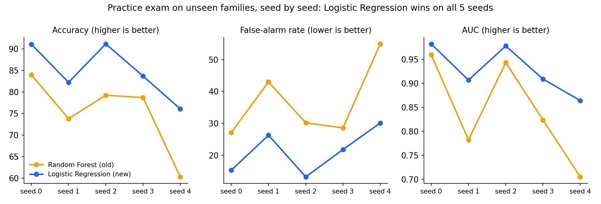
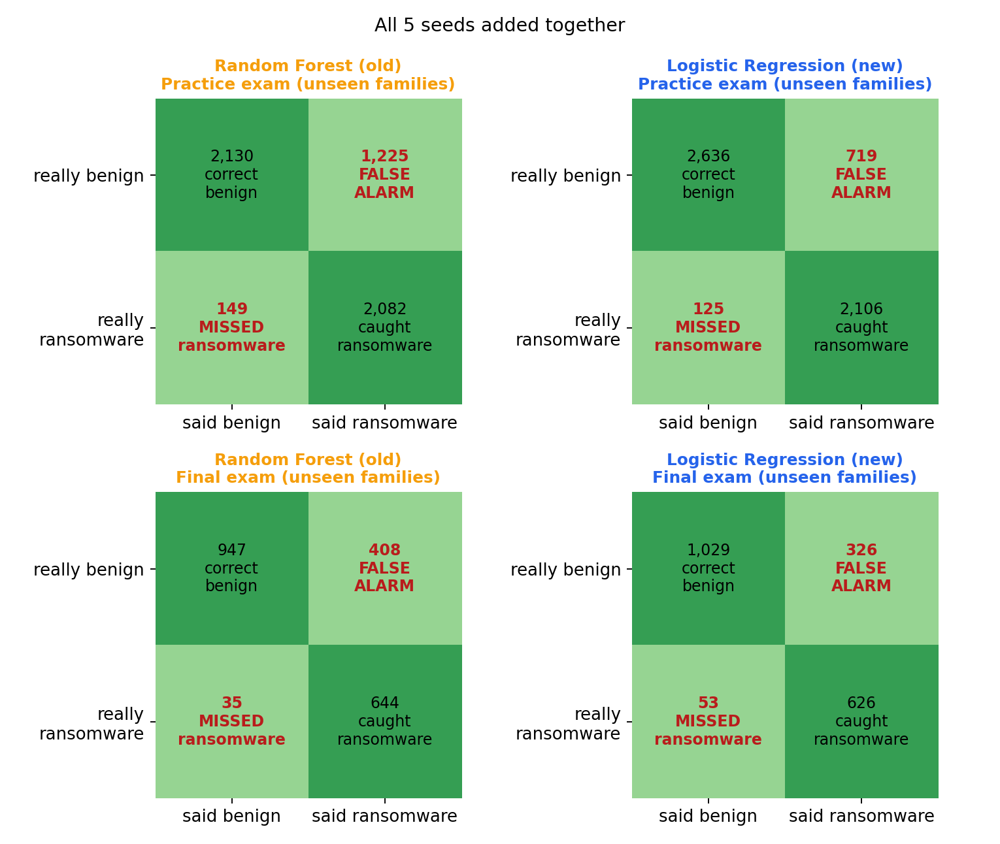
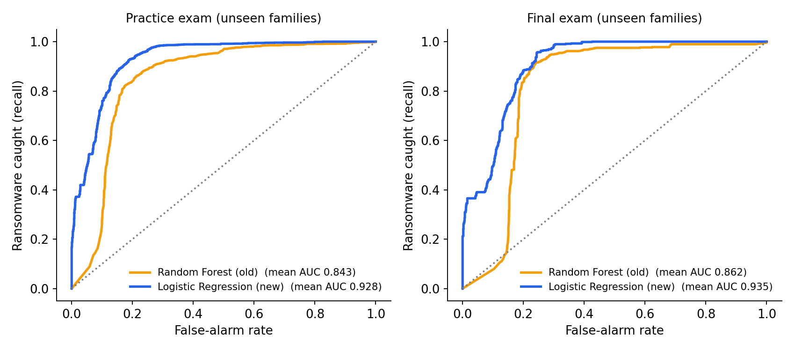
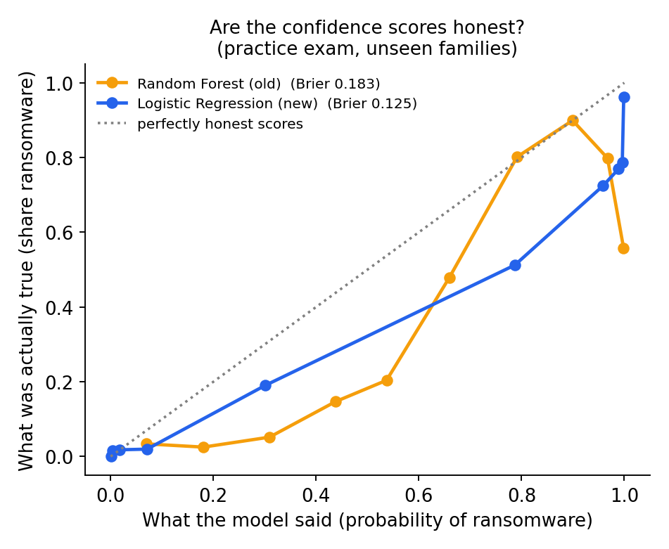
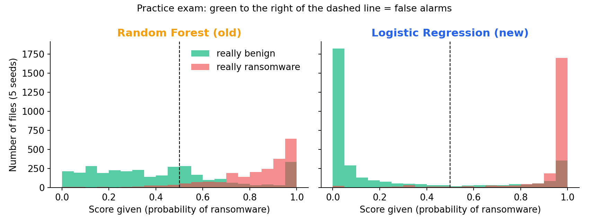
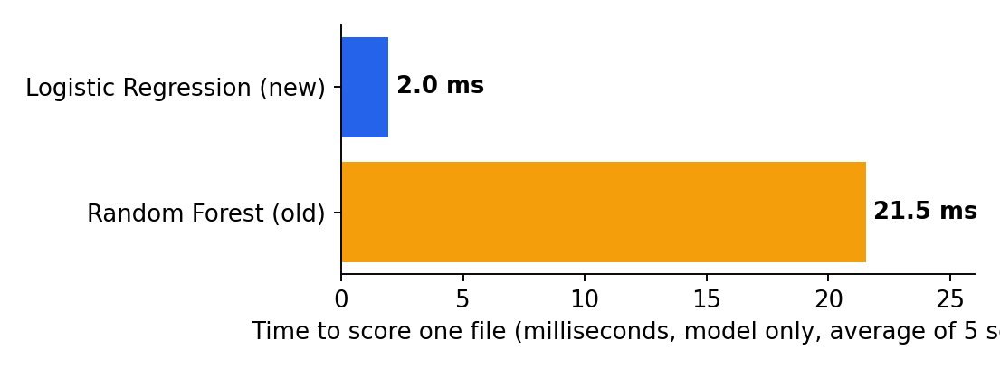
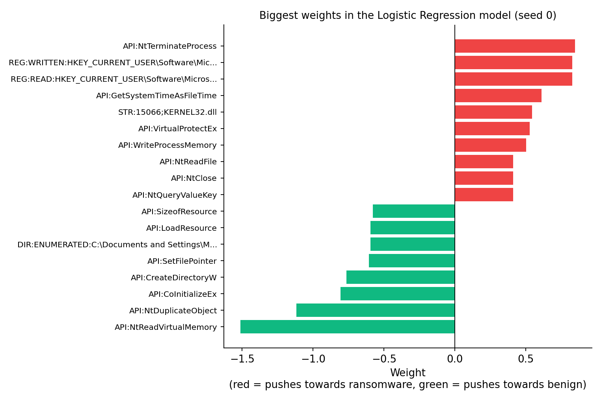

| Version | Date / commit | What changed |
|---|---|---|
| v0.1 | 16 Nov 2026, a3fd04d | First detector: Random Forest (300 trees). Results for 5 seeds saved. |
| v0.2 | 16 Nov 2026, c449533 | Logistic Regression became the main model. The Random Forest is kept as a comparison. Same data, same splits, same seeds. |
We built the first stage of the system: a detector that looks at what a file does and says benign or ransomware, with a confidence score. We tested it only on ransomware families it had never seen. Our first model, a Random Forest, did badly on those new families. We switched to Logistic Regression, which made fewer mistakes on new families, gave more honest confidence scores, and was about 11 times faster.
| Word | What it means here |
|---|---|
| Family | A group of ransomware variants made by the same people and behaving in similar ways (for example, one family = one "brand" of ransomware). |
| Unseen family | A family the model was never trained on. This copies a real zero-day attack. |
| Seed | A number that decides which families are hidden. We repeat everything with 5 seeds (0 to 4), so we do not rely on one lucky choice. |
| Accuracy | Out of all files, the share the model got right. |
| Recall (catch rate) | Out of all real ransomware, the share the model caught. Higher is better. |
| False-alarm rate (FPR) | Out of all safe (benign) files, the share wrongly called ransomware. Lower is better. |
| AUC | How well the scores put ransomware above benign files, from 0.5 (coin toss) to 1.0 (perfect). It does not depend on a cut-off. |
| Brier score | How honest the confidence scores are. 0 is perfect; lower is better. |
| OOF score | "Out-of-fold": a score for a file from a model that never saw that file's family in training. |
| mean ± std | The average over the 5 seeds, and how much it moves between seeds (std = standard deviation). |
We use the Sgandurra ransomware dataset. Each file was run inside a sandbox (a safe, locked computer) and the dataset records 30,967 yes/no behaviours, for example "did it call this Windows function?" or "did it write to this registry key?".
| Type of behaviour | Number of columns | Example |
|---|---|---|
| Text strings found in the file (STR) | 16,267 | a text such as "KERNEL32.dll" |
| Registry actions (REG) | 6,622 | reads or writes a Windows settings key |
| File actions (FILES) | 4,141 | opens, writes or deletes a file |
| Folder actions (DIR) | 2,424 | lists the contents of a folder |
| File-extension actions (FILES_EXT) | 935 | touches files ending in .jpg, .docx ... |
| Dropped files (DROP) | 346 | creates a new file of a given type |
| Windows function calls (API) | 232 | calls NtTerminateProcess |
| Ransomware family | f01 | f02 | f03 | f04 | f05 | f06 | f07 | f08 | f09 | f10 | f11 |
|---|---|---|---|---|---|---|---|---|---|---|---|
| Number of files | 50 | 107 | 46 | 25 | 64 | 97 | 59 | 4 | 90 | 6 | 34 |
Benign files have no family names, so we group similar benign files into 20 groups ourselves (see groups.py below). Almost every cell in the table is 0, so we store only the 1s.
| File | In simple words |
|---|---|
prepare_X.py | The table has 30,967 columns of 0s and 1s and almost all are 0. We store only the 1s, so it shrinks from about 190 MB to about 2 MB. |
groups.py | Ransomware files come with a family name; benign files do not. The first grouping put 804 of 942 benign files in one group, which breaks the "hide whole families" idea, so we re-grouped them into 20 balanced groups by similarity. |
model.py | The detector. It first drops columns that are the same for every training file. Then it uses either Logistic Regression (main) or Random Forest (comparison). |
run_static.py | Runs the whole experiment for one seed and one model (explained next). |
summarize.py | Collects the 5 seeds for each model and writes the mean ± std tables. |
The key idea: test the model on families it has never seen, just like a brand-new attack in real life.
What it is: 300 decision trees. Each tree asks a chain of yes/no questions ("did it call function X? did it write registry key Y?") and votes benign or ransomware. The share of votes becomes the probability. We used balanced class weights because there are more benign files than ransomware.
Why we started with it: it is a standard, strong baseline, it works on yes/no features without any scaling, and it gives probabilities.
| Random Forest results (mean ± std over 5 seeds) | ||||
|---|---|---|---|---|
| Test setting | Accuracy | Recall | False-alarm rate | AUC |
| Random split (families seen, "cheat") | 97.0% ± 0.7 | 97.1% ± 1.2 | 3.2% ± 1.1 | 0.996 ± 0.002 |
| Practice exam (unseen families) | 75.2% ± 9.1 | 93.0% ± 5.1 | 36.8% ± 12.0 | 0.843 ± 0.108 |
| Final exam (unseen families) | 78.7% ± 16.7 | 95.1% ± 2.9 | 26.8% ± 24.5 | 0.862 ± 0.160 |
What it is (simple version): every behaviour gets a weight. Behaviours typical of ransomware get positive weights, and behaviours typical of normal software get negative weights. For a file, the model adds up the weights of everything the file did and turns the total into a probability between 0 and 1. It is like a points system: lots of suspicious points means "probably ransomware".
Settings: drop columns that never change, then Logistic Regression with L2 regularisation (keeps weights small so no single behaviour dominates), C = 1, balanced class weights, liblinear solver. No other tuning.
| Test setting / measure | Random Forest (old) | Logistic Regression (new) | Change |
|---|---|---|---|
| Random split (families seen, "cheat") | |||
| Accuracy | 97.0% ± 0.7 | 97.7% ± 0.9 | +0.7 pts |
| False-alarm rate | 3.2% ± 1.1 | 2.0% ± 0.7 | −1.2 pts |
| AUC | 0.996 ± 0.002 | 0.997 ± 0.001 | +0.001 |
| Practice exam (unseen families) — the setting used to choose the model | |||
| Accuracy | 75.2% ± 9.1 | 84.9% ± 6.4 | +9.7 pts |
| Recall (ransomware caught) | 93.0% ± 5.1 | 94.2% ± 5.1 | +1.2 pts |
| False-alarm rate | 36.8% ± 12.0 | 21.3% ± 7.1 | −15.5 pts |
| AUC | 0.843 ± 0.108 | 0.928 ± 0.051 | +0.085 |
| Brier score (lower = more honest) | 0.183 ± 0.063 | 0.125 ± 0.053 | −0.058 |
| Final exam (unseen test families) | |||
| Accuracy | 78.7% ± 16.7 | 82.1% ± 14.6 | +3.4 pts |
| Recall (ransomware caught) | 95.1% ± 2.9 | 92.7% ± 5.3 | −2.4 pts |
| False-alarm rate | 26.8% ± 24.5 | 21.1% ± 22.9 | −5.7 pts |
| AUC | 0.862 ± 0.160 | 0.935 ± 0.083 | +0.073 |
| Brier score | 0.188 ± 0.142 | 0.150 ± 0.140 | −0.038 |
| Speed | |||
| Time to score one file (model only) | 21.5 ms | 1.95 ms | about 11× faster |
Green = better. "pts" = percentage points. All numbers were recomputed directly from the saved prediction files and match the saved summaries exactly.
| Seed | Practice exam accuracy | Final exam accuracy | Final exam AUC | |||||
|---|---|---|---|---|---|---|---|---|
| RF | LR | Change | RF | LR | Change | RF | LR | |
| 0 | 84.0% | 91.1% | +7.1 | 64.7% | 66.7% | +2.0 | 0.759 | 0.912 |
| 1 | 73.8% | 82.3% | +8.4 | 70.5% | 88.6% | +18.1 | 0.945 | 0.973 |
| 2 | 79.3% | 91.2% | +11.9 | 64.7% | 66.1% | +1.4 | 0.632 | 0.799 |
| 3 | 78.7% | 83.7% | +5.0 | 95.4% | 95.7% | +0.3 | 0.989 | 0.998 |
| 4 | 60.3% | 76.1% | +15.8 | 98.1% | 93.5% | −4.6 | 0.986 | 0.993 |
| Wins | LR 5 of 5 | LR 4 of 5 | LR 5 of 5 | |||||
Final-exam test families per seed: seed 0 = f03, f04, f08; seed 1 = f01, f03, f10; seed 2 = f04, f06, f11; seed 3 = f03, f04, f06; seed 4 = f02, f03, f04 (plus 5 benign groups each). Seeds 0 and 2 are hard for both models because many benign test files look suspicious (about 40% to 53% false alarms for both).







Why did you start with a Random Forest? It is a standard, strong baseline for yes/no features, needs no scaling, and gives probabilities.
Why did you change? On unseen families it lost 21.8 accuracy points, flagged about 1 in 3 safe files, and its confidence scores were less honest. Logistic Regression was better on every seed on the practice exams.
Did you choose Logistic Regression by looking at the test results? No. We chose it using only the practice exams (dev data). The final-exam families were not used to choose the model.
Isn't Logistic Regression too simple? Simple helps here. We have about 1,100 training files and 30,967 behaviours. A simple model that adds up evidence generalises better to new families than a complex one that memorises the known ones.
Was anything worse? Yes: on the final exam it caught slightly fewer ransomware files (92.7% vs 95.1%). Overall it made fewer mistakes because it raised far fewer false alarms.
Why hide whole families? A real zero-day attack is a family the model has never seen. Random splits hide that problem and give inflated scores.
Why save probabilities instead of just "ransomware / benign"? The trust layer needs a confidence score (for example, "92% ransomware") to decide which answers to trust and which files to send to the slower sandbox check.
Why are the numbers so different between seeds? There are only 11 ransomware families, and some families are much easier than others. That is why we report the average and spread over 5 seeds.
Methods. The static stage is a binary classifier trained on the Sgandurra dataset (1,524 samples; 942 benign, 582 ransomware from 11 families; 30,967 binary behavioural features). Benign samples were clustered into 20 pseudo-families (k-means on a 50-component truncated SVD). For each of five seeds, 25% of families (3 ransomware, 5 benign) were held out as a test set; out-of-fold scores on the development set were produced with 5-fold family-grouped cross-validation (StratifiedGroupKFold). A random (non-grouped) 5-fold CV was run as an ablation. We first used a Random Forest (300 trees, balanced class weights). Based on family-grouped out-of-fold performance on the development data only, we replaced it with an L2-regularised logistic regression (C = 1, balanced class weights) preceded by a zero-variance filter; the Random Forest is retained as a comparison.
Results. Under random CV both models reached about 97% accuracy (RF 0.970 ± 0.007; LR 0.977 ± 0.009). On unseen families, the Random Forest dropped to 0.752 ± 0.091 accuracy (FPR 0.368, AUC 0.843) in grouped CV, whereas logistic regression reached 0.849 ± 0.064 (FPR 0.213, AUC 0.928, Brier 0.125 vs 0.183), winning on all five seeds. On held-out test families logistic regression achieved 0.821 ± 0.146 accuracy and AUC 0.935 ± 0.083 versus 0.787 ± 0.167 and 0.862 ± 0.160 for the Random Forest, at the cost of slightly lower recall (0.927 vs 0.951). Inference took 1.95 ms vs 21.5 ms per sample. The gap between random and family-wise evaluation, and the high confidence of many errors, motivate the downstream trust layer.
From the repo root with the virtual environment active:
python -m common.build_master → builds data/master.parquetpython -m static.prepare_X → builds data/X_sparse.npzpython -m static.run_static --seed 0 (Logistic Regression), repeat for seeds 1 to 4python -m static.run_static --seed 0 --model rf (Random Forest comparison), repeat for seeds 1 to 4python -m static.summarize → results/static_summary.mdpython docs/static_v0/make_figures.py → all figures and per-seed numbers in this documentThe old Random Forest outputs are also kept in old random forest results/; they are byte-for-byte identical to artifacts/preds_static_rf_seed*.parquet.